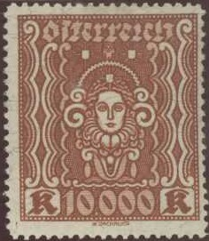

Return To Catalogue - Austria overview - Austria 1919-1921
Note: on my website many of the
pictures can not be seen! They are of course present in the
catalogue;
contact me if you want to purchase the catalogue.
Agriculture
1/2 K yellow 2 1/2 K brown 7 1/2 K violet 12 1/2 K olive 15 K green 20 K blue 25 K red 100 K grey 120 K brown 150 K orange 160 K green 180 K red 200 K red 240 K violet 300 K blue 400 K green 500 K yellow 600 K black 700 K brown 800 K violet
Industry

1 K brown 2 K blue 4 K lilac 5 K olive 10 K red 30 K grey 45 K red 50 K brown 60 K green 75 K blue 80 K yellow 1000 K violet 1200 K red 1500 K orange 1600 K grey 2000 K blue 3000 K blue 4000 K blue on blue
Arts


20 K brown 25 K blue 50 K brown 100 K green 200 K lilac 500 K orange 1000 K violet 2000 K green 3000 K brown 5000 K blue 10000 K brown
Cut from a postcard in a similar design, 700 k brown.

Arrow and posthorn, special delivery stamp of 1922
50 h violet
Falcon
300 K red 400 K green 600 K yellow 900 K orange Ing. Wilhelm Kress
1200 K grey 2400 K black 3000 K brown 4800 K blue
2 1/2 K brown (Haydn) 5 K blue (Mozart) 7 1/2 K black (Beethoven) 10 K lilac (Schubert) 25 K green (Bruckner) 50 K red (Strauss) 100 K olive (Hugo Wolf)
200 K brown (Innsbruck) 240 K brown (Linz) 400 K brown (Graz) 600 K brown (Melk) 1000 K black (Vienna)
100 + 300 K green 300 + 900 K red 500 + 1500 K lilac 600 + 1800 K blue 1000 + 3000 K brown
Value
1 g grey 2 g lilac 3 g red 4 g blue (1927) 5 g yellow 6 g blue 7 g brown 8 g green
Country side view
10 g yellow 15 g lilac 16 g blue 18 g olive
Bird on mountain
20 g violet 24 g red 30 g brown 40 g blue 45 g brown 50 g brown 80 g blue
Larger sizes
1 S green 2 S red Overprinted 'Winterhilfe' (winter relief) and surcharged (1933)
'+ 2 g' on 5 g green (colour changed)
A 'FAKSIMILE' of a proof of a 10000 K stamp of the 1925 issue of
Austria (the currency is still in Kronen).
Pilot
2 g brown 5 g red 6 g blue 8 g green 10 g orange 15 g lilac 30 g brown 50 g blue Bird and aeroplane
10 g red 15 g red 30 g violet 50 g black 1 S blue 2 S green 3 S brown 5 S blue 10 S brown on grey (larger design)
3 + 2 g olive 8 + 2 g blue 15 + 5 g red 20 + 5 g green 24 + 6 g violet 40 + 10 g brown
10 (+10) g brown 15 (+15) g brown 30 (+30) g grey 40 (+40) g violet

10 g orange or yellowish brown (Güssing) 15 g lilac (Hochosterwitz) 16 g grey (Durnstein) 18 g green (Traunsee) 20 g grey (Durnstein, design as 16 g, 1930) 24 g red (Salzburg, specialists distinguish two shades of red) 30 g violet (Seewiesen) 40 g blue (Innsbruck) 50 g violet (Worthersee, 1930) 60 g olive (Hohenems) 1 S brown (National Libraby, Nationalbibliothek) 2 S green (Wien, cathedral) Overprinted with 'ROTARY INTERNATIONAL CONVENTION WIEN 1932' 10 g brown (blue overprint) 20 g grey (red overprint) 30 g violet (golden overprint) 40 g blue (golden overprint) 50 g violet (red overprint) 1 S brown (black overprint)
These stamps were re-issued in smaller sizes in 1932
10 g brown (Güssing) 12 g green (Traunsee) 18 g green (Traunsee) 20 g grey (Durnstein) 24 g red (Salzburg) 24 g violet (Salzburg) 30 g violet (Seewiesen) 30 g red (Seewiesen) 40 g blue (Innsbruck) 40 g violet (Innsbruck) 50 g violet (Worthersee) 50 g blue (Worthersee) 60 g olive (Hohenems) 64 g olive (Hohenems) Overprinted 'WINTERHILFE' (winter relief) and surcharged (1933)
'+ 3 g' on 12 g olive-green (colour changed) '+ 5 g' on 24 g orange (colour changed) '+50 g' on 1 Sh red (colour changed)
10 g (+ 10 g) brown 20 g (+ 20 g) red 30 g (+ 30 g) lilac 40 g (+ 40 g) blue 1 S (+ 1 S) brown
10 g (+ 10 g) lilac (Raimund) 20 g (+ 20 g) black (Grillparzer) 30 g (+ 30 g) red (Nestroy) 40 g (+ 40 g) blue (Stifter) 50 g (+ 50 g) green (Anzengruber) 1 S (+ 1 S) brown (Rosegger)

50 g (+ 50 g) blue
12 g (+ 12 g) black (F.G.Waldmuller) 24 g (+ 24 g) lilac (Moritz Schwind) 30 g (+ 30 g) red (Rudolf Alt) 40 g (+ 40 g) black (Hans Makart) 64 g (+ 64 g) brown (Gustav Klimt) 1 S (+ 1 S) brown (A. Egger-Lienz)
12 g (+ 12 g) green 24 g (+ 24 g) violet 30 g (+ 30 g) red 50 g (+ 50 g) blue

50 g (+ 50 g) violet
These stamps were printed in sheets of 50 (5 x 10) or in minisheets of 4 stamps (10,000 minisheets were issued).
Minisheet with inscription 'INTERNATIONALE POSTWERTZEICHEN -
AUSSTELLUNG WIEN 1933', reduced size
A reprint of the above minisheet was made in 1981, if my information is correct, the words 'FAKSMILE 1981' are written at the bottom of each stamp. I've also seen another 'reprint' in light green color with a black 'Faksimile' overprint at the bottom of the sheet.
Yet another reprint was made in red of a single 50 g (+50 g) in red on a minisheet. This reprint was made in 1965 and the imperforate stamp bears the overprint 'NEUDRUCK WIPA 1965'. Further the text 'WIENER INTERNATIONALE POSTWERTXEICHEN-AUSSTELLUNG' is printed at the lower part of this mini sheet.
A label for the WIPA exhibition, I have also seen this label in
the colour green.
Other labels exist with inscription 'INTERNATIONALE POSTWERTZEICHEN AUSSTELLUNG WIEN 1933': train, postman on horse, boat, rocket etc. (all in violet color).
12 g (+ 12 g) green (view of Vienna around 1683) 24 g (+ 24 g) violet (Marco d'Aviano) 30 g (+ 30 g) red (count v. Starhemberg) 40 g (+ 40 g) black (King Joh II. Sobieksi) 50 g (+ 50 g) blue (Charles V) 64 g (+ 64 g) brown (J.A. von Liebenberg)
Small sized stamps
1 g violet (Burgenland man) 3 g red (Burgenland woman) 4 g green (Karnten man) 5 g lilac (Karnten woman) 6 g blue (Niederosterreich man) 8 g green (Niederosterreich woman) 12 g brown (Oberosterreich man) 20 g light-brown (Oberosterreich woman) 24 g green (Salzburg man) 25 g violet (Salzburg woman) 30 g brown (Steiermark man) 35 g red (Steiermark woman) Larger sized stamps
40 g blue (Tirol) 45 g brown (Tirol) 60 g blue (Vorarlberg) 64 g brown (Vorarlberg) 1 S lilac (Wien, family) 2 S green (military costumes)
The two types of the 2 Sh stamp
The 2 S exists in two types with different colour. The greyish green colour has a different eagle than the bright green colour, which has the eagle design corrected (the last one was issued in 1935). The 6 g also exists in two types with different ears of the person.
Overprinted 'Winterhilfe' or 'WINTERHILFE' and surcharged (1935)
5 g + 2 g green (colour changed) 12 g + 3 g blue (colour changed) 24 g + 6 g brown (colour changed) 1 S + 50 g red (colour changed)
24 g black 24 g violet (1935)
12 g (+ 12 g) black (Anton Pilgram) 24 g (+ 24 g) violet (Fischer von Erlach) 30 g (+ 30 g) red (Jakob Prandtauer) 40 g (+ 40 g) brown (A. v. Siccardsburg) 60 g (+ 60 g) blue (Heinrich von Ferstel) 64 g (+ 64 g) green (Otto Wagner)
24 g blue
5 g violet 10 g red 15 g green 20 g blue 25 g lilac 30 g brown 40 g green 50 g blue 60 g black 80 g brown Larger size
1 S red 2 S olive 3 S brown 5 S green 10 S blue
12 g (+ 12 g) brown (Prince Eugen) 24 g (+ 24 g) green (Laudon) 30 g (+ 30 g) brown (duke Karl) 40 g (+ 40 g) grey (Radetsky) 60 g (+ 60 g) blue (Tegetthoff) 64 g (+ 64 g) lilac (v.Hotzendorff)
24 g (+ 24 g) violet 35 g (+ 35 g) red 60 g (+ 60 g) blue
24 g blue
3 S orange 5 S black

10 S blue
5 g + 2 g green 12 g + 3 g violet 24 g + 6 g blue 1 S + 1 S red
12 g (+ 12 g) brown (Josef Ressel) 24 g (+ 24 g) violet (Karl Ritter von Ghega) 30 g (+ 30 g) red (Josef Werndl) 40 g (+ 40 g) black (Carl Freih. Auer v. Weisbach) 60 g (+ 60 g) blue (Robert v. Lieben) 64 g (+ 64 g) green (Victor Kaplan)
24 g brown
12 g brown 24 g blue 64 g green
5 g + 2 g green 12 g + 3 g brown 24 g + 6 g blue 1 S + 1 S red
12 g brown (first train) 25 g violet (steam train) 35 g brown (electric train)
5 g brown (Van Swieten) 8 g red (Auenbrugger) 12 g grey (Von Rokitansky) 20 g green (J.Skoda) 24 g lilac (Von Hebra) 30 g red (Von Arlt) 40 g green (J.Hyrtl) 60 g blue (T.Billroth) 64 g lilac (T.Meynert)
12 g green 24 g red
Example of an envelope with mixed Austrian and German stamps
Example of a Soviet zone eagle stamp of 1945
Example of a 40 g blue cut from a postal stationary with a double headed eagle in the design.